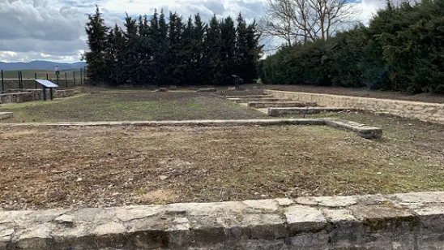

ÁLAVA ROMANAEn el Valle de Arana, en la localidad de Contrasta, la ermita románica de Elizmendi, esta edificada parcialmente con lápidas romanas. Las salinas romanas del Valle de Añana. En Arkaia se ha descubierto un poblado que abarca del siglo I a.e.c. al al siglo III . Las termas se integraban en una población importante, Suestatium, situada como el resto de los principales núcleos romanos de Álava, junto a la calzada Vía XXXIV, itinerario que comunicaba Astorga con Burdeos. El yacimiento de las termas romanas data del siglo I y II. En julio de 2024, descubren «una piscina romana» y restos de una gran construcción de 3000 metros cuadrados.
De la romanización en Álava destaca el yacimiento Arqueológico Romano de Iruña-Veleia, en la localidad de Iruña de Oca. Se trata de un poblado delimitado perimetralmente por una muralla tardorromana de 1,5 Km. de longitud. En el Museo de Arqueología de Vitoria-Gasteiz pueden verse las mejores piezas halladas en el recinto.En octubre de 2019, en Valdegovía hallan un gran yacimiento de época prerromana, romana y medieval. Se descubren varias construcciones altoimperiales, y un silo y cerámica prehistóricos en una excavación en Villanañe. Podría tratarse de algún tipo de instalación o poblado junto a la calzada romana por la que salía la sal. En enero de 2022, hallan en Víllodas nuevos restos de la calzada romana que unía Astorga y Burdeos. La calzada romana que atravesaba la LLanada. El mayor estanque celtibérico de Europa puede verse en Laguardia. Se tenía por mágico que almacenaba hasta 300.000 litros de agua. En el lugar se halló una estatua dedicada a las diosas Matres; estas divinidades habituales en la zona celtibérica estaban asociadas a los manantiales acuíferos.
En marzo de 2023, sale a la luz
en Jundiz un tramo de la vía romana Iter XXXIV en excelente estado de
conservación y un poblado neolítico datado en el 3000 a.e.c.
GUIPÚZCOA ROMANA Irún, la antigua Oiasso y su museo romano. Oiasso la ciudad o civitas portuaria de los vascones. La mina romana en Arditurri. Destaca su estado de conservación, los escalones y una balsa se decantación de mineral. En San Sebastian, en noviembre de 2017, aparece cerámica romana del siglo I a.e.c en lo que fue la huerta del cura de Aizarna.
VIZCAYA ROMANA Poblada desde el Paleolítico. De época romana destaca en Urdaibai el Poblado romano de Forua. Data de época de los emperadores Claudio y Nerón.
|